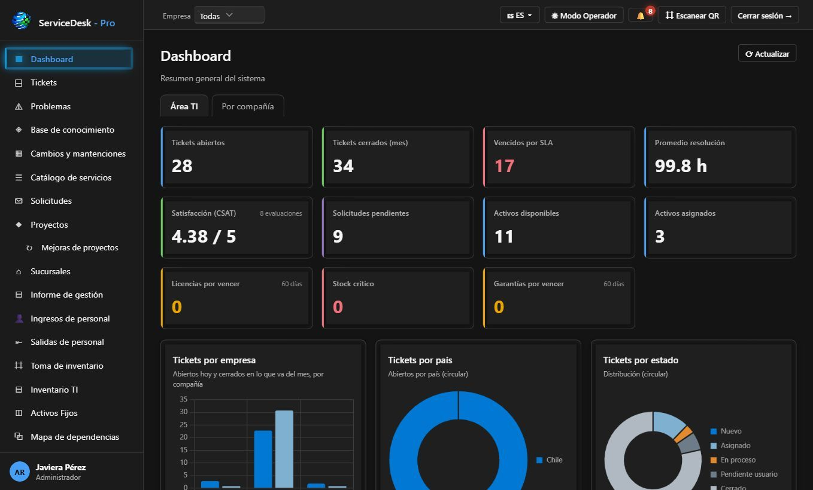
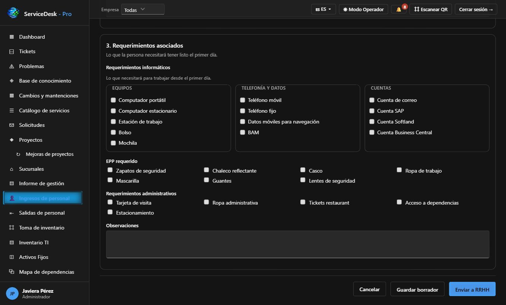
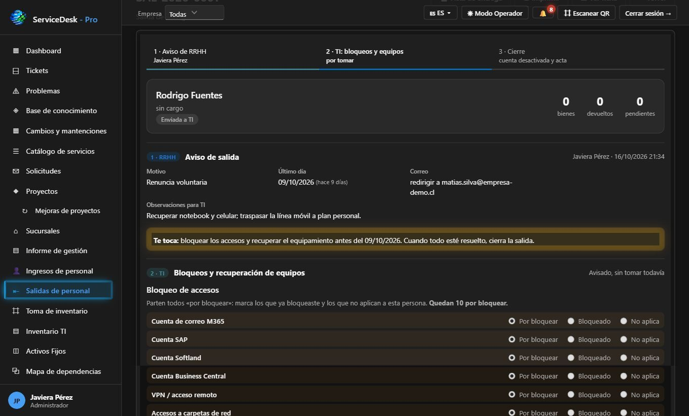
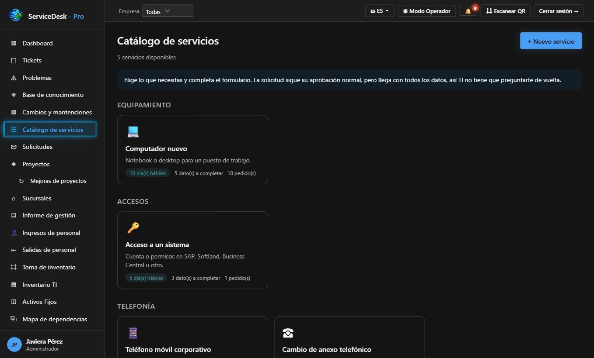
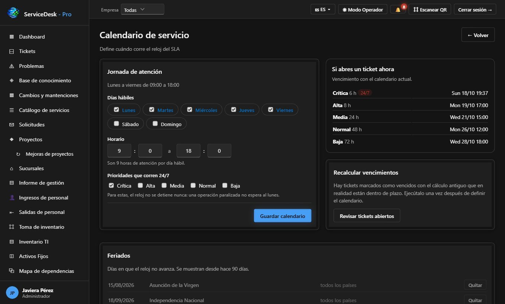
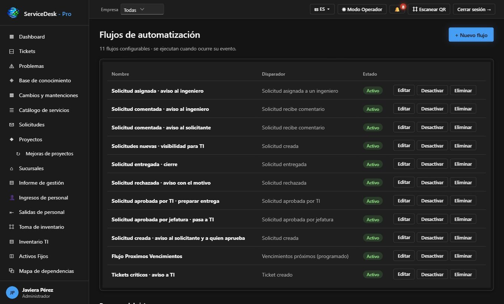
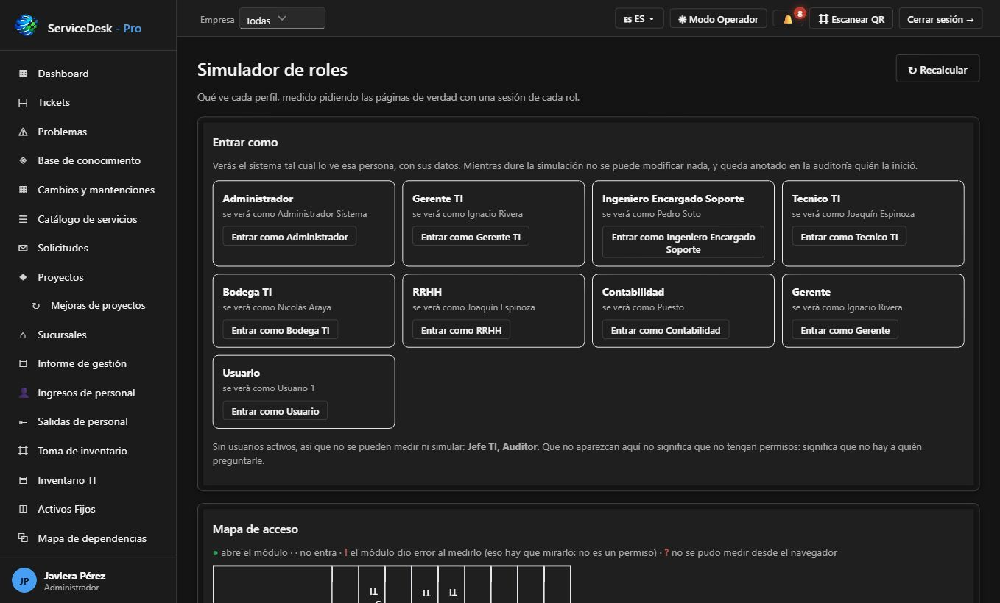

Mesa de ayuda con SLA
Tickets por empresa, sucursal, zona, categoría y prioridad, asignados por ingeniero. El reloj del SLA sigue la jornada de atención y los feriados, y la encuesta CSAT mide la satisfacción.
Mesa de ayuda con SLA, ingresos y salidas de personal junto a RRHH, inventario TI y activos fijos con QR, cartera de proyectos, bodega, licencias, cuentas móviles e informe de gestión. Multiempresa, con login Microsoft 365 y app móvil.
portal.certidesk.cl/serviceflexParte de IntegralFlex Suites
ServiceDesk Pro reúne en un solo sistema todo lo que pasa por un área TI. La mesa de ayuda gestiona tickets con SLA por prioridad, calendario de servicio, feriados y escalamiento automático. Detecta tickets repetidos para abrir problemas, programa cambios y mantenciones y mantiene una base de conocimiento. Los usuarios piden servicios desde un catálogo y cada solicitud sigue su flujo de aprobación.
El sistema también conecta TI con Recursos Humanos. Cuando entra un colaborador, la jefatura describe el cargo y lo que necesitará. RRHH valida y TI prepara equipos, cuentas, telefonía y EPP antes del primer día. Cuando alguien se va, RRHH avisa y TI recibe una pauta para bloquear accesos y recuperar equipos con acta firmada.
Del lado de los bienes, ServiceDesk Pro administra el inventario TI y los activos fijos contables con QR, integración SAP y depreciación. Incluye tomas de inventario en terreno, mapa de dependencias, bodega, transferencias entre empresas, licencias, compras y líneas móviles. La gerencia lo sigue en un dashboard con más de 15 indicadores y recibe un informe de gestión mensual en PDF. Todo es multiempresa, con roles y auditoría.
Tickets por empresa, sucursal, zona, categoría y prioridad, asignados por ingeniero. El reloj del SLA sigue la jornada de atención y los feriados, y la encuesta CSAT mide la satisfacción.
Niveles de escalamiento según el porcentaje de SLA consumido, con aviso al ingeniero, a quien reportó o a la jefatura. Prioridades críticas que corren 24/7.
Encuentra los tickets que hablan de lo mismo en los últimos 30 días y los agrupa en un problema con su impacto, responsable y causa común.
Artículos con las soluciones a los problemas más frecuentes, buscables por usuarios e ingenieros.
Calendario de ventanas de mantención y registro de cambios planificados, en vista mensual o de lista.
Los usuarios piden equipamiento, accesos, telefonía o software desde un catálogo, y cada solicitud pasa por la aprobación de la jefatura y de TI.
La jefatura completa el descriptor del cargo: perfil, competencias, jornada y requerimientos de equipos, cuentas SAP, Softland o Business Central, EPP y elementos administrativos. RRHH valida al colaborador y TI prepara todo antes del primer día.
RRHH avisa la salida y adjunta la carta. TI recibe una pauta para bloquear correo M365, SAP, VPN, carpetas, telefonía y tarjeta de acceso, recupera el equipamiento con acta de devolución y cierra la salida.
Desarrollos desde la propuesta hasta la puesta en producción, con etapas, tareas y mejoras. Muestra el avance real contra el plan, los días al compromiso, los proyectos quietos y la carga del equipo.
Cada equipo tiene QR, etiqueta imprimible y hoja de vida. El catálogo de modelos incluye miniaturas, y el mapa de dependencias (CMDB) identifica los equipos críticos.
Activos con centro de costo, ubicación, valor de adquisición, depreciación acumulada y valor libro, importados desde SAP. Se enlazan con el inventario TI para ver un mismo equipo desde operaciones y desde contabilidad.
Verificación de activos en terreno por alcance, con escaneo QR, avance y detección de diferencias.
Entregas y devoluciones de equipos con acta PDF firmada, para respaldar formalmente cada movimiento.
Stock de bodega TI con movimientos y alertas de stock crítico. Las transferencias de bienes entre empresas del grupo siguen su propio flujo de aprobación.
Líneas de telefonía e internet móvil por empresa y faena, con su plan, equipo y cargo mensual, y gráficos por proveedor y por plan.
Licencias de software con alertas de vencimiento, garantías por vencer, proveedores y compras del área con sus documentos.
Más de 15 gráficos: SLA mensual, demanda contra capacidad, carga por ingeniero y atenciones por zona. El informe de gestión mensual consolidado se descarga en PDF y se envía automáticamente por correo.
Flujos de aprobación configurables por etapa y rol, con simulación e historial, y plantillas editables para cada aviso automático por correo.
Varias empresas, sucursales y zonas en un mismo sistema. Incluye 11 roles (TI, Bodega, RRHH, Contabilidad, Gerencia, Auditor y otros), un simulador que muestra qué ve cada perfil y auditoría de cada acción.
App instalable en Android y iPhone para aprobar, ver los tickets asignados y crear tickets. Login con Microsoft 365 o usuario local, interfaz en español, inglés y francés, y reportes exportables a Excel.
Pantallas reales del sistema con datos de demostración: los nombres de personas, empresas y correos son ficticios.







RRHH y la jefatura solicitan el ingreso y TI deja listos los equipos, cuentas y accesos antes del primer día.
Tickets y solicitudes con SLA, escalamiento, base de conocimiento y gestión de problemas.
Inventario TI y activos fijos con QR, entregas con acta, bodega, licencias y líneas móviles.
En cada salida de personal, TI bloquea los accesos y recupera los equipos con acta.
Dashboard, informe de gestión mensual en PDF, cartera de proyectos y auditoría.
Flask + PostgreSQL y Chart.js, en Debian 12 con Gunicorn + Nginx
Actas, etiquetas e informes en PDF, códigos QR y exportación a Excel
Microsoft 365, SAP (activos fijos), ApprovalDesk Pro y CRMDesk Pro
Web y app móvil, multiempresa, 3 idiomas, 11 roles y auditoría
Planes desde 0,5 UF por usuario al mes. Escríbenos y coordinamos una demo con tus datos.